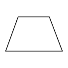

Imagem trapézio

Como pode ser visto na imagem, um trapézio é formado por uma base maior, base menor e duas linhas paralelas então:
Calculo área do trapézio
Informe valor da base maior
Informe valor da base menor
Informe o valor da linha paralela
Calcular